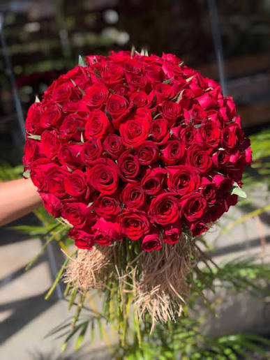
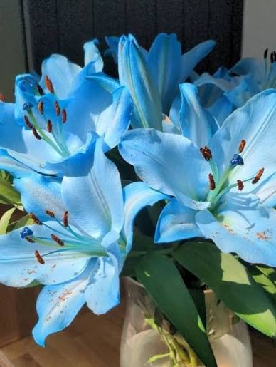

A floricultura Entre Pétalas tem como objetivo oferecer flores, plantas, arranjos de flores de qualidade, para que possamos proporcionar beleza e sofisticação aos demais diversos ambientes.Trabalhamos com dedicação e preparação de nossos produtos, buscando atender às necessidades dos clientes e tornar momentos especiais ainda mais significativos
Nosso compromisso é proporcionar um atendimento de qualidade, valorizando a beleza natural das flores e a satisfação de cada cliente.


Para conhecer mais sobre flores e jardinagem https://www.jardineiro.net/ acesse este site sobre plantas.